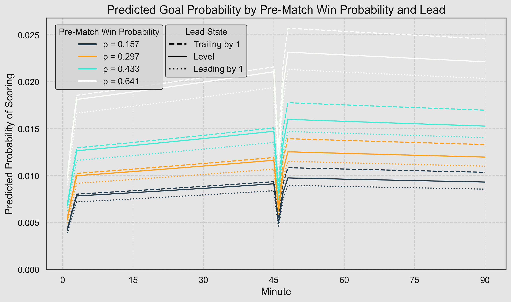

How does scoring rate change in a football match based on time elapsed and game state?
Creating a logistic regression model to predict the chance of scoring a goal in each minute of a football match based on the pre-match odds, current score, minutes elapsed, and any red cards.
When is a football team most likely to score? My simple hypothesis would consist of:
- The chance of scoring increases as the game goes on.
- Teams who are ahead are less likely to score than teams who are behind.
But what does the data say?
I looked at goal times from the big 5 European leagues (England, Spain, Germany, Italy, France) since 2017 - a total of 38,882 goals from 14,357 games.
What to do about injury time?
A tricky part of goal times in football is how to deal with injury time. Conventionally, these are often recorded as 45’ for a goal in first half injury time and 90’ for second half injury time, so you naturally end up with larger goal totals in these minutes, leading to artificial spikes that distort time-based goal patterns.
It might be possible to consider each injury time minute individually, but that would require knowing exactly which minutes were played in full, and which were ended after, say, 15 seconds. I don’t currently have that level of detail, so I decided to ignore injury time goals for the purpose of this analysis, guaranteeing that the 90 minutes could all be treated equally.
Firstly, here is a summary of the goals in each of the 90 minutes:
As expected, we see an upward trend, with understandably low totals at the start of each half as it’s harder to score when each team’s entire XI start in their own half of the pitch.
But what’s that patch of high totals between 48 and 58 minutes? Why would there be a stretch of unusually high scoring just after half time like this? I double-checked for data errors but it appears to be correct - we will come back to this apparent anomaly a little later.
Next, here is the same chart but showing expected goals (xG) instead of goals. The trend closely mirrors the goals chart, but with much lower variance. I will continue using goals for this particular analysis, but this is a good demonstration of why xG is so useful in statistical analysis of football: lowering variance is generally a good thing!
Game state
So why does scoring tend to increase as a game progresses? One obvious factor is that every game starts off at 0-0, and scores are more likely to be level early in games than later on. Here is a summary of the scoreline by minute:
As you can see, for almost the entire first half a level scoreline is most common, and thereafter it is more frequently a one-goal lead for either team. If level games are generally tighter and more defensive than games where one team is leading, then that would explain the lower scoring early in games.
When we look at a smoothed plot of scoring rate categorised by lead, we can see that teams with a two-goal lead score at the highest rate, followed by teams with a one-goal lead. (I would ignore the trends for -2 and +2 early in the game, due to small sample issues)
The problem here is we have an additional factor: team strength. If a team is leading by two goals, then it is more likely that they are simply a better team than their opponent, and hence more likely to score next. So we need to also account for the quality of the teams.
I divided all teams into quartiles based on their pre-match bookmaker odds, with quartile 4 containing the strongest teams and quartile 1 the weakest:
Time for a regression
Now let’s bring everything together. The simplest way to estimate the effects of several variables when applied simultaneously is with a multiple regression. In this case we will use a logistic regression, since the outcome is binary (0 goals or 1 goal).
The current lead in each minute was categorized with a minimum of “-2 or less” and a maximum of “2 or more”. Additional features in the model were the minute, pre-match odds (converted to probability), and red cards for and against.
I decided to create separate models for the first and second halves, since the shape of some of the plots suggested it may not be a simple linear relationship for 90 minutes. Based on the low scoring in minutes 1, 2, 46 and 47, I also included dummy variables for minute 1 and minute 2 of each half.
Finally, for each half I trained a second model including interactions between lead and minute, lead and pre-match odds, and between lead and red cards for and against. After inspecting the interaction terms’ p-values, plus a likelihood ratio test and the Akaike Information Criterion (AIC), it seemed like the simpler model was about the same. If in doubt, always stick with the simpler model!
Logistic Regression: First Half
| Coefficient | Std. Error | z-value | p-value | CI Lower | CI Upper | |
|---|---|---|---|---|---|---|
| Intercept | -5.080 | 0.055 | -92.566 | 0.000 | -5.187 | -4.972 |
| Trailing (-1) | -0.022 | 0.053 | -0.417 | 0.677 | -0.126 | 0.081 |
| Level (0) | -0.047 | 0.050 | -0.929 | 0.353 | -0.145 | 0.052 |
| Leading (1) | -0.132 | 0.053 | -2.497 | 0.013 | -0.236 | -0.028 |
| Leading (2 or more) | -0.064 | 0.063 | -1.022 | 0.307 | -0.188 | 0.059 |
| First Min of Half | -0.620 | 0.075 | -8.317 | 0.000 | -0.767 | -0.474 |
| Second Min of Half | -0.248 | 0.063 | -3.968 | 0.000 | -0.371 | -0.126 |
| Minute | 0.004 | 0.001 | 5.421 | 0.000 | 0.002 | 0.005 |
| Red Card | -0.766 | 0.139 | -5.507 | 0.000 | -1.039 | -0.493 |
| Opponent Red Card | 0.536 | 0.073 | 7.354 | 0.000 | 0.393 | 0.679 |
| Pre-match Win Prob | 1.752 | 0.038 | 45.761 | 0.000 | 1.677 | 1.827 |
If you aren’t familiar with logistic regression results, don’t worry too much about the columns other than Coefficient. And the Intercept is only used when making predictions, otherwise that isn’t too relevant.
Each coefficient represents the associated change in log odds of scoring a goal - a positive coefficient means the chances of a goal increase as this variable increases, and vice versa.
Firstly, we can see that teams leading by 1 have a lower coefficient (-0.132) than the other scorelines. This means teams with a one-goal lead are the least likely to score, all other things being equal.
The first two minutes of the half, as expected, have lower scoring, and then there is a small increase (0.004) for each minute as the half progresses. A red card (-0.766) reduces the chance of scoring more than an opposition red card (0.536) increases it. Predictably, pre-match win probability (1.752) is a strong positive predictor of scoring rate.
Logistic Regression: Second Half
| Coefficient | Std. Error | z-value | p-value | CI Lower | CI Upper | |
|---|---|---|---|---|---|---|
| Intercept | -4.758 | 0.029 | -165.596 | 0.000 | -4.814 | -4.702 |
| Trailing (-1) | -0.036 | 0.027 | -1.335 | 0.182 | -0.088 | 0.017 |
| Level (0) | -0.143 | 0.026 | -5.576 | 0.000 | -0.193 | -0.093 |
| Leading (1) | -0.228 | 0.028 | -8.249 | 0.000 | -0.282 | -0.174 |
| Leading (2 or more) | -0.156 | 0.030 | -5.243 | 0.000 | -0.215 | -0.098 |
| First Min of Half | -0.695 | 0.068 | -10.218 | 0.000 | -0.828 | -0.561 |
| Second Min of Half | -0.170 | 0.053 | -3.176 | 0.001 | -0.274 | -0.065 |
| Minute | -0.001 | 0.001 | -1.866 | 0.062 | -0.002 | 0.000 |
| Red Card | -0.643 | 0.058 | -11.162 | 0.000 | -0.756 | -0.530 |
| Opponent Red Card | 0.475 | 0.034 | 14.071 | 0.000 | 0.409 | 0.542 |
| Pre-match Win Prob | 1.813 | 0.038 | 47.985 | 0.000 | 1.739 | 1.887 |
In the second half, the effects of the scorelines are a little more pronounced: a one-goal lead has a coefficient of -0.228 compared to -0.132 in the first half. We can also see that the effect of each additional minute is actually slightly negative now (-0.001).
To demonstrate these results, I used the median of each quartile of pre-match odds and predicted each minute of the game with scorelines of -1, 0, and 1, with no red cards:

If a strong favourite (white line) was playing against an underdog (dark blue line), we can see that if the favourite were trailing by one goal in the second half, their probability of scoring in each minute would increase significantly more than the associated decrease in the underdog’s chance of scoring. This intuitively feels correct: favourites often ramp up the pressure when chasing an equaliser.
Summary of findings
- Teams are relatively more likely to score when trailing than when level, and more likely to score when level than when leading.
- In the first half, scoring rate increases as the half progresses, all other things being equal.
- When the teams come out for the second half, scoring rate jumps higher than it was in the 45th minute, and then gradually decreases as the half progresses.
What about those high values in the 48th-58th minute?
If we revisit the first plot in this article, the unusually high values between 48 and 58 minutes can now be understood. I have added a red line to the plot which now looks like a slight downward trend in the second half, rather than a series of observations above the overall trend:
Limitations
There are, of course, some limitations to this analysis. Injury time in both halves has been ignored, as have factors like league- or game-specific goal totals. There is also the question of whether goals beget more goals: all other things being equal, does a scoreline of 1-1 tend to predict more goals than a scoreline of 0-0?
There is plenty more scope to drill down in a future analysis, but this gives us a nice framework to build on. If you are interested in viewing the code and visualizations behind this project, please visit my Github repo.
© 2025 John Knight. All rights reserved.